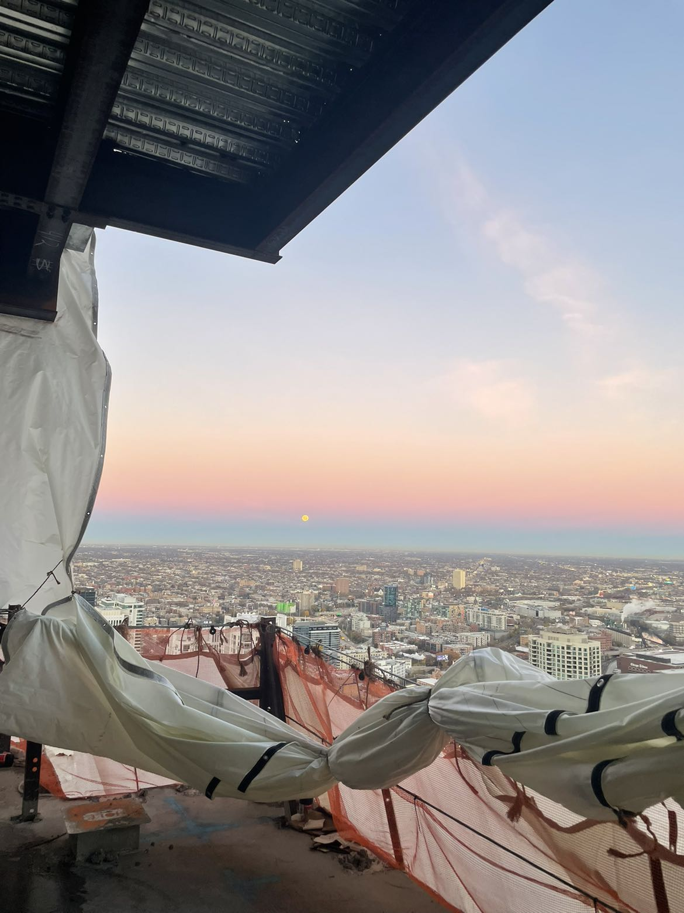
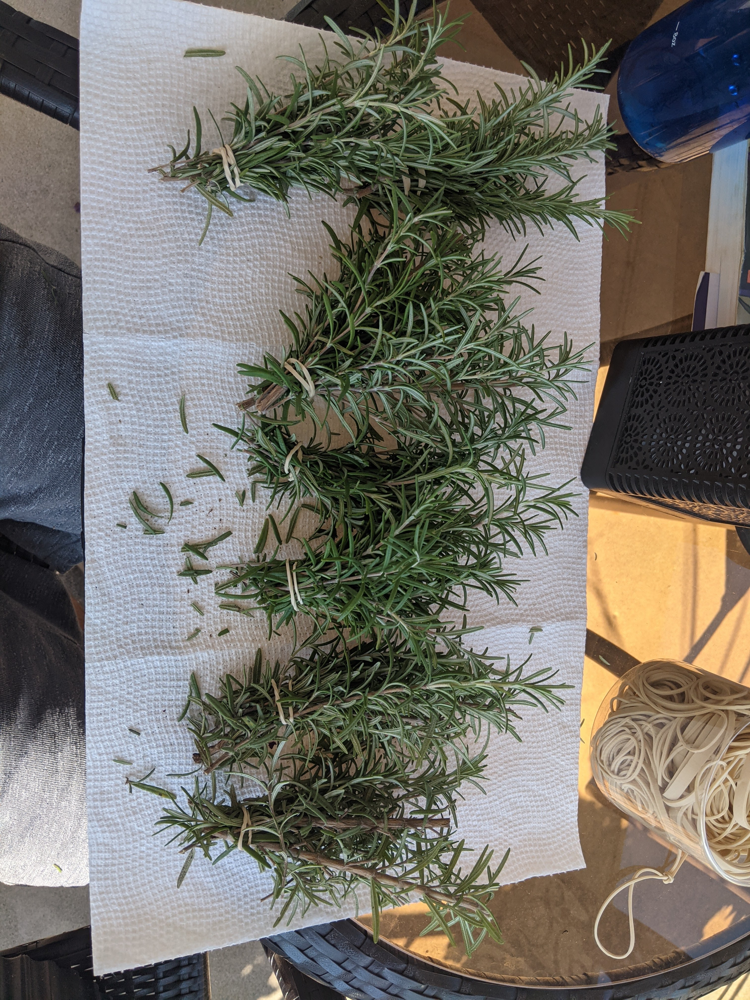

Pictures collected and received throughout time
>
Chicago sunrise
Submitted by Kieran M. on 1/4/2022
>
Rosemary I harvested from my garden last summer. This is the rosemary as I tied it up to be hung out to dry.
Submitted by Joe B. on 1/4/2022